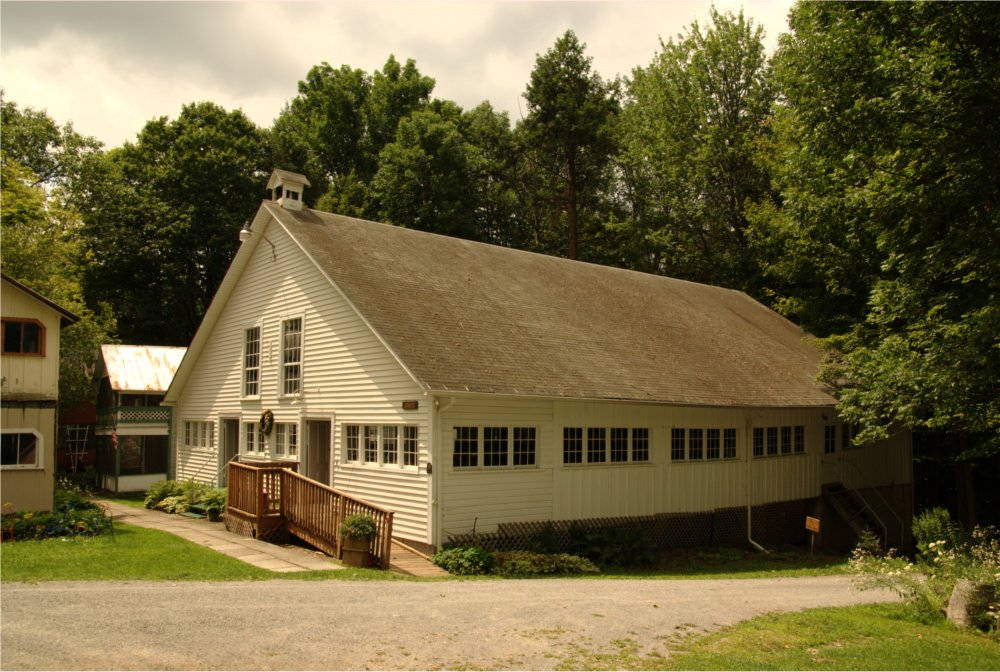
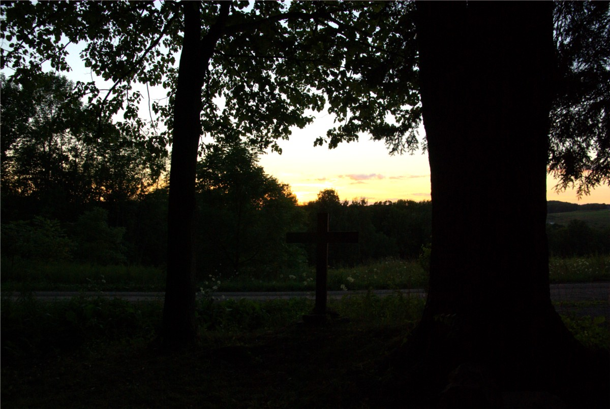
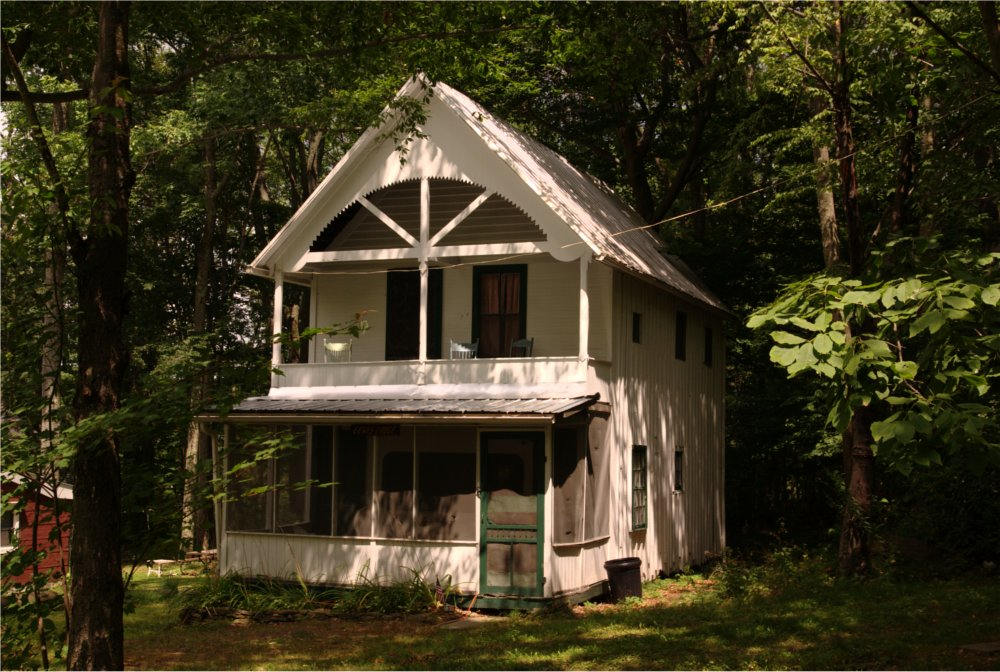
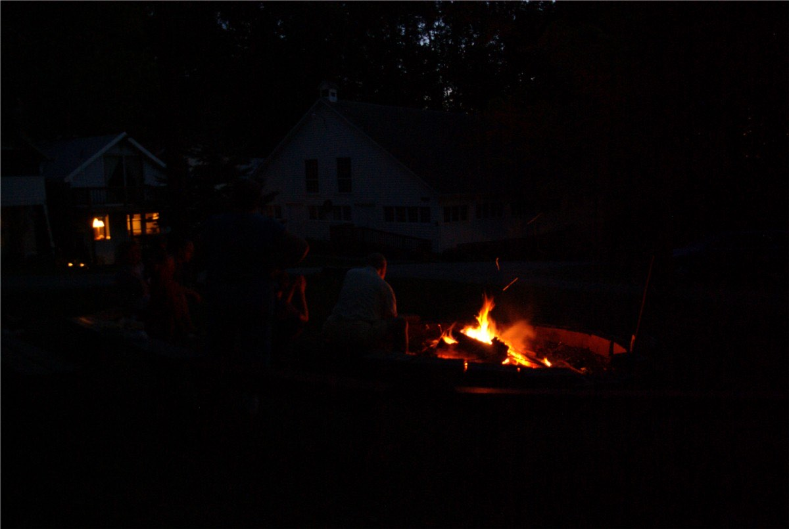
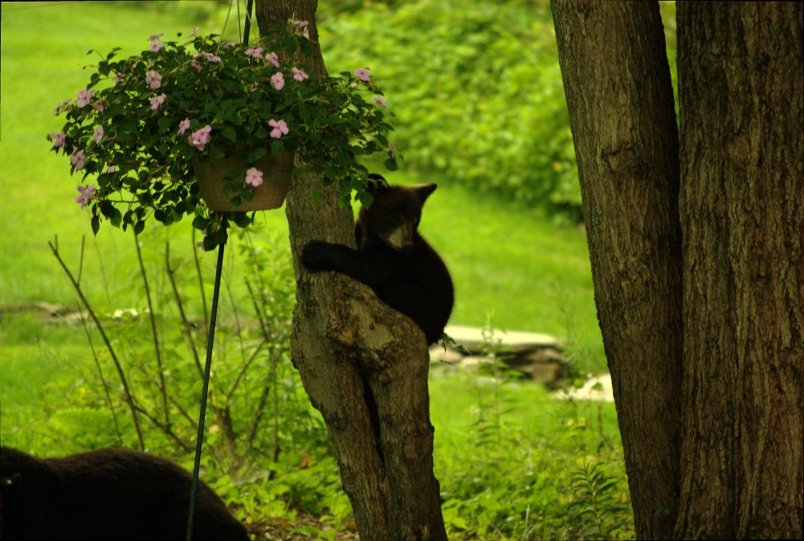
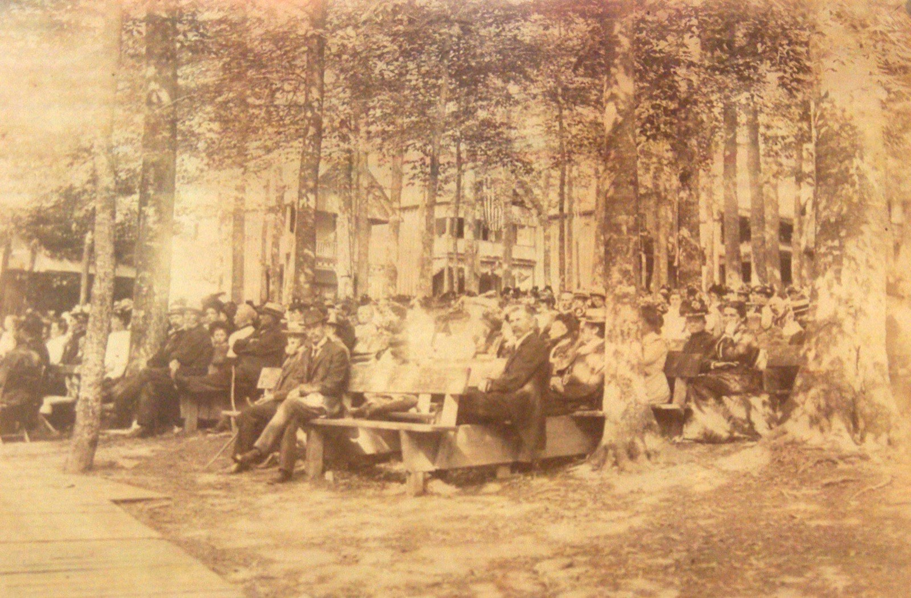

Gathering in the grove since 1875
Serving Christ in the Endless Mountains
Our mission
To offer the love of God as known in Christ, and to invite others to grow in faith
Our vision
To develop our God-given resources to provide a variety of programs and activities that will expand opportunities with the community at large
The grounds
A hundred cottages around an open square, a chapel, a pavilion, a pond and nearly a mile of nature trail — the same ground families have been coming back to for a century and a half.





Our heritage
The Dimock Camp Meeting traces its roots back to 1875 when a decision was made by several Methodist Episcopal congregations in the region to create "a permanent campmeeting ground" in the then Wyalusing District of the Methodist Church. Its purposes were spiritual revival and evangelization as the "plain gospel" was proclaimed and taught.
Let all who cherish the vision of a beautiful grove come forth. The call to the workbee at Dimock, July 1875
The Camp Meeting was chartered in 1877. When the Wyalusing District was dissolved in 1878, few would have dreamed that it could sustain itself. But God has worked in wondrous yet mysterious ways, and we are pleased to welcome you once again in to take part in a series of Sunday evening worship experiences in the chapel followed by refreshments.
First camp meeting preaching on the grounds, with 7,000 in attendance that week
Chartered as the Wyalusing District Camp Meeting Association
The chapel completed, where Sunday evening services are still held
Designated a United Methodist Church heritage landmark
Find us
46 Dimock Camp Road, Springville, PA 18844
A half mile west of Rt. 29 in Dimock, about 15 miles north of Tunkhannock and 7 miles south of Montrose. There is a pavilion on the grounds and a pond, and we welcome churches and others to use our facilities.